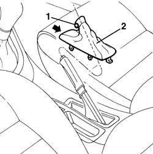

3380A44 handbrake/linkage protection - r+r
- Path
- Procedures > 33 BRAKING SYSTEM > 3380 HANDBRAKE > 3380A handbrake control and linkage > 3380A44 handbrake/linkage protection - r+r
- Kind
- repair procedure (removal / refitting; the operation number is the code)
- Applies to
- all engines; all production periods
- Interactive page
- https://sloeber94.github.io/elrnDB-a156/en/#/3238117
Applies to: all engines; all production periods
 Removing
Removing
 Refitting
Refitting1. Lift handbrake lever and open pin.
2. take handbrake guard off.
Act by the side flash shows.

Applies to: all engines; all production periods
Refitting
RemovingCheck guard is not damaged.
Put handbrake guard.
Close pin again.
Topics that link to this page (29)
- G02 HANDBRAKE LOCKED
- rear fuel delivery line - r r
- 1040B56 fuel return line - r r
- 1080E41 tank - separator line - r r
- 2127A12 hand lever of manual gearbox with hydraulic selection - r r
- 2127A70 support for control levers for manual gearbox with hydraulic selection and handbrake - r r
- 5010B24 under-facia air ducts r r
- 5010B46 central air duct to rear seat - arrange
- 5010B47 side air duct to rear seat(one), lh or rh - r r
- 5020A10 heater box - r+r
- 5020B10 heater control support - r+r
- 5020B28 air conditioner symbol light bulb/s - includes control panel r+r
- 5020B31 air distribution flap control cable(one) - r r
- 5020B42 air mixer flap control cable - r+r
- 5020B80 heater system wiring bundle - r r or replace
- 5020L10 additional heater system boiler - r r
- 5040C10 air conditioner box - r+r
- 5040C12 air conditioner housing - r r with facia disconnected
- 5505A26 bonnet wiring - r r
- 5505C31 under-facia wiring - r r
- 5505C41 cabin wiring - r r
- 5550D18 handbrake on warning light switch - r+r
- 5580C86 side bag wiring harness (one) lh or rh - r r or replace
- 7040A10 instrument facia trim - r+r
- 7040A97 facia trim support beam - r r
- 7040L10 cabin floor carpet - r r
- 7040L20 tunnel trim - r r
- 7040L22 REAR TRIM on TUNNEL -R.R.
- 7065A80 pre-tensioner wiring - r r